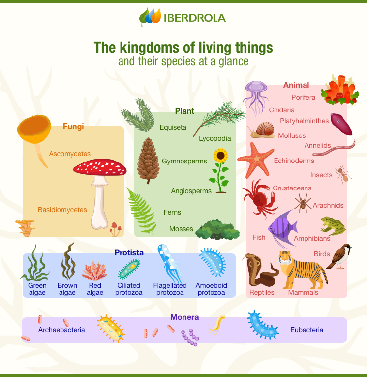

Connection Among Living Things and Their Interaction with the Environment
Topic 2
Introduction
The connection among living things and their interaction with the environment is an essential aspect of ecosystems and the natural world. Living organisms, including plants, animals, and microorganisms, rely on each other and their surroundings for survival and reproduction. This interconnectedness is known as an ecological or environmental relationship.
Living Things
Living things depend on their environment for essential resources such as food, water, and shelter. Additionally, they can have an impact on the environment by altering it through their activities, such as by consuming resources or producing waste.
(reference: iberdrola.com)
This can have far-reaching effects on other living organisms and the overall balance of the ecosystem.
Interaction
At the same time, living organisms can have complex interactions with each other, including competition for resources, predation, mutualism, and symbiosis. These interactions can have a significant impact on the populations and behavior of the organisms involved, as well as on the overall health and stability of the ecosystem.
(reference: by Mark Rollins)
Conclusion
Overall, the connection among living things and their interaction with the environment is a fundamental aspect of ecology and the functioning of natural systems. Understanding these connections is essential for effective conservation and management of ecosystems, as well as for addressing environmental challenges such as climate change and habitat loss